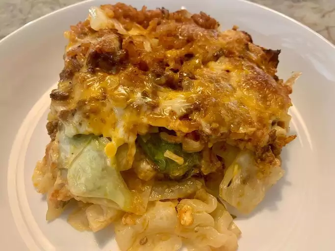

My cabbage roll casserole has all the ingredients of stuffed cabbage rolls but is a lot easier to make! This basic recipe will appeal to everyone but if you prefer more flavor, consider adding crushed garlic, paprika, thyme, or cayenne pepper.
Preheat the oven to 350 degrees F (175 degrees C) and gather all ingredients.
Heat a large skillet over medium-high heat. Cook and stir ground beef in the hot skillet until browned and crumbly, 5 to 7 minutes. Drain and discard grease.
Combine cabbage, tomato sauce, onion, rice, and salt in a large mixing bowl. Stir in cooked ground beef. Pour mixture into a 9x13-inch baking dish, then pour beef broth over top.
Cover and bake in the preheated oven for 1 hour.
Stir, re-cover, and bake until cabbage is tender and rice is done, 20 to 30 minutes more.
Serve hot and enjoy!